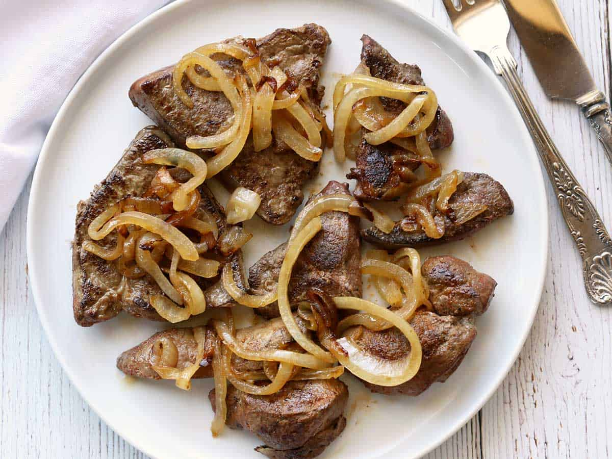

Beef Liver and Onions

Dr Lecter's go-to-snack after gym
Easy 30-minute recipe, thin slices of beer liver are seasoned,quickly sauteed in olive oil
then topped with caramelized onions.
If you're willing to give internal organs a try and be Dr Lecter, as long as you don't
overcook the livers, you're in for a treat!
Ingredients
- Onion (Sliced thinly and separated into rings)
- Olive oil
- Beef liver
- Seasonings (Kosher salt, black pepper, garlic powder, and smoked paprika)
Steps
- You start with the onion
- slice it, separate the slices into rings, then cook the rings in olive oil until caramelized. This takes longer than cooking the liver. You should expect to cook the onions for about 7-8 minutes.
Once the onions are cooked, you set them aside (I sometimes place them in a warm oven to keep them warm) and turn your attention to the liver.
- To prepare the liver
- you blot it dry with paper towels, then sprinkle it with seasonings. Carefully wipe the skillet clean with paper towels (it will be hot), add a bit more oil, and cook the livers.
Cook them briefly - about 3 minutes per side over medium heat. You don't want them overcooked. I like them slightly pink in the middle (though the USDA would disagree).
When they're done, place them on plates, top with the onions, and serve.
Return to home